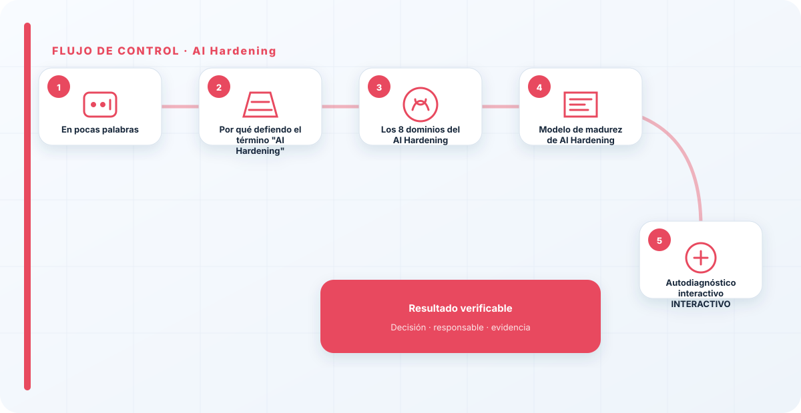
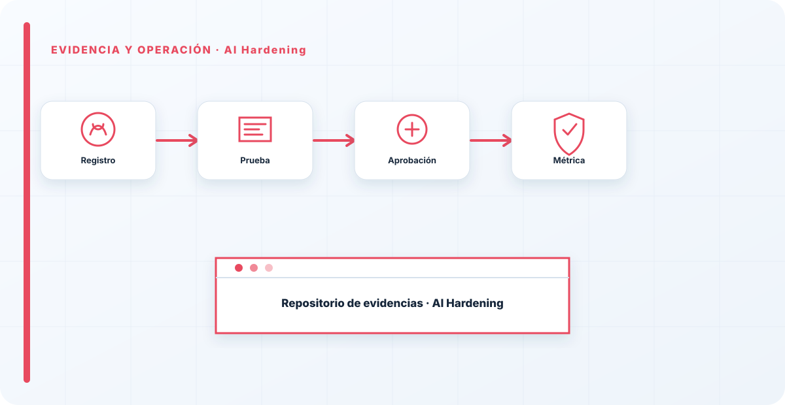

En pocas palabras
¿Harías pública la contraseña de tu dominio? Entonces, ¿por qué dejas que cualquier empleado conecte cualquier IA a información corporativa? La IA está entrando en las organizaciones a una velocidad enorme y, en muchos casos, se despliega sin las medidas de seguridad que sí exigimos a servidores, aplicaciones o infraestructuras. AI Hardening es aplicar a la IA la misma disciplina de endurecimiento que ya aplicamos al resto de nuestros sistemas. No existe un estándar único, pero sí un conjunto de controles que, en mi experiencia, deberían formar parte de cualquier estrategia de seguridad. Una IA mal gobernada no es solo un problema de cumplimiento: es una nueva superficie de ataque.
Por qué defiendo el término "AI Hardening"
Llevo más de dos décadas endureciendo infraestructura, y cuando veo cómo se están desplegando modelos y agentes hoy, reconozco el mismo patrón que vivimos con la nube hace quince años: primero llega la funcionalidad, la seguridad llega después y a remolque. La diferencia es que un LLM con acceso a herramientas y a datos corporativos concentra, en un solo punto, capacidades que antes estaban repartidas y controladas.
Por eso hablo de hardening y no solo de "buenas prácticas": el hardening es sistemático, es verificable y deja evidencia. No es una lista de deseos, es un baseline que se aplica, se mide y se audita. En las páginas siguientes desgloso los 8 dominios que considero mínimos. No hace falta abordarlos todos a la vez; hace falta saber en qué nivel estás en cada uno y tener un plan para subir.
Si tu estrategia de IA cabe en una política en PDF y no deja evidencia, no tienes seguridad: tienes una intención. El hardening existe precisamente para lo contrario — que cualquiera pueda venir, mirar y comprobar en qué punto estás.
Los 8 dominios del AI Hardening
Cada dominio endurece una superficie distinta. Los presento con el objetivo, los controles que aplico, la evidencia que dejo y el error que veo con más frecuencia.
1 · Hardening del acceso a modelos
El primer fallo casi siempre está en el acceso: claves de API compartidas por correo, cuentas de servicio con permisos de administrador y ningún control de quién invoca qué modelo. Endurecer el acceso es tratar al modelo como lo que es, un recurso crítico con su propio perímetro de identidad.
- MFA y SSO sobre las consolas y los portales de modelos, sin excepciones para "usuarios técnicos".
- Gestión segura de API Keys: bóveda de secretos, rotación, claves por entorno y por servicio, nunca en código.
- Mínimo privilegio real: cada agente o servicio con el alcance justo, no con un token maestro.
- Separación de roles entre quien desarrolla, quien despliega y quien aprueba.
Evidencia: inventario de claves con propietario y fecha de rotación · matriz de roles y permisos. Error habitual: una única clave "de la empresa" que lo abre todo y nadie sabe dónde vive.
2 · Protección de los datos
El modelo es tan sensible como el dato que le dejas ver. La mayoría de los incidentes que acabo analizando no son ataques sofisticados al modelo, sino datos que nunca debieron entrar en un prompt o en un índice RAG.
- Clasificación de la información antes de decidir qué puede tocar la IA.
- DLP aplicado a prompts, respuestas y a la ingesta de documentos.
- Anonimización y tokenización de datos personales y secretos antes de la inferencia.
- Cifrado en tránsito y en reposo, incluidos los índices vectoriales y las cachés.
Evidencia: política de clasificación aplicada al dato de IA · reglas DLP activas y sus alertas. Error habitual: volcar un repositorio entero al RAG "por comodidad" sin filtrar por clasificación.
3 · Gobierno de IA
No puedes endurecer lo que no sabes que existe. El Shadow AI —gente conectando herramientas por su cuenta— es hoy el equivalente a las cuentas locales sin control que perseguíamos en los servidores. El gobierno convierte el uso disperso en algo inventariado y aprobado.
- Inventario de modelos, agentes y usos, incluidos los de terceros y los embebidos en SaaS.
- Model Cards con propósito, límites, datos y responsable de cada modelo.
- Registro de prompts críticos y de las decisiones automatizadas de impacto.
- Gestión del Shadow AI: detección, aprobación y vía oficial para pedir nuevas herramientas.
- Ciclo de vida y aprobaciones: alta, cambios y baja con dueño y fecha.
Evidencia: inventario vivo de IA · model cards firmadas · flujo de aprobación con trazas. Error habitual: descubrir en una auditoría un agente en producción que nadie había registrado.
4 · Hardening del modelo
Aquí entra lo específico de la IA. El modelo procesa lenguaje, y el lenguaje es el vector: instrucciones que se cuelan por la entrada, por un documento recuperado o por la salida de otra herramienta. Endurecer el modelo es asumir que la entrada es hostil por defecto.
- Protección frente a Prompt Injection directa, indirecta y persistente.
- Detección de Jailbreaks y de intentos de evasión de instrucciones.
- Validación de entradas y saneado del contexto antes de llegar al modelo.
- Validación de salidas antes de mostrarlas o de ejecutar acciones a partir de ellas.
- Guardrails con políticas explícitas de lo que el modelo puede y no puede hacer.
Evidencia: guardrails versionados · casos de prueba de inyección en el pipeline. Error habitual: confiar en el system prompt como si fuese un control de seguridad. No lo es.
5 · Seguridad de la cadena de suministro
Un modelo, un peso descargado, un MCP o un plugin son dependencias, y las dependencias se firman y se verifican. La cadena de suministro de IA hereda todos los riesgos del software más los suyos propios: pesos manipulados, datasets envenenados y conectores de terceros con acceso a tus datos.
- Verificación de modelos y procedencia comprobable de los pesos.
- Control de pesos (weights): hash, origen y almacenamiento controlado.
- Revisión de MCPs, agentes y plugins antes de darles acceso a herramientas o datos.
- Dependencias firmadas y SBOM extendido a los componentes de IA.
Evidencia: SBOM con componentes de IA · registro de verificación de modelos y conectores. Error habitual: instalar un MCP de un repositorio cualquiera y darle acceso a producción el mismo día.
6 · Monitorización
Sin telemetría, un incidente de IA es invisible hasta que el daño ya está hecho. La monitorización de IA no sustituye a la tradicional: la extiende con las señales propias del modelo —qué se le pregunta, qué responde y qué acciones dispara—.
- Logging de prompts y respuestas, con el cuidado de no crear un nuevo repositorio de datos sensibles.
- Auditoría de accesos, cambios de configuración y uso de herramientas.
- Detección de anomalías en patrones de uso, coste y salidas.
- Integración con SIEM para correlacionar la IA con el resto del entorno.
Evidencia: eventos de IA llegando al SIEM · alertas y sus tiempos de respuesta. Error habitual: loguear todo sin retención ni control de acceso, convirtiendo el log en el nuevo objetivo.
7 · Infraestructura
Debajo del modelo hay una arquitectura, y esa arquitectura se endurece con los principios de siempre. Un agente comprometido debe quedar contenido, no tener vía libre hacia la red interna.
- Segmentación de red entre la IA, los datos y el resto de sistemas.
- Contenedores aislados para la ejecución de herramientas y de código generado.
- API Gateway y WAF delante de los endpoints de inferencia.
- Protección frente a DoS y control de coste, que en IA van de la mano.
Evidencia: diagrama de segmentación · políticas del gateway · límites de tasa y de gasto. Error habitual: exponer un endpoint de inferencia directo a internet sin gateway ni límites.
8 · Cumplimiento
El cumplimiento no es una capa que se pega al final: es lo que da sentido y trazabilidad a las siete anteriores. Cada control debería poder mapearse a un requisito de un marco reconocido, porque eso es lo que convierte tu esfuerzo en algo defendible ante una auditoría o un regulador.
- ISO/IEC 42001 como sistema de gestión de IA.
- NIST AI RMF para estructurar el riesgo en Govern, Map, Measure y Manage.
- OWASP Top 10 for LLM Applications para los riesgos técnicos del modelo.
- OWASP Agentic AI Security para agentes y herramientas.
- Reglamento Europeo de IA (AI Act) según la clasificación de riesgo de tu caso de uso.
Evidencia: matriz de controles ↔ requisitos de marco. Error habitual: tratar el cumplimiento como un documento único y no como el hilo que conecta todos los controles.

Modelo de madurez de AI Hardening
Uso esta escala para situar a una organización sin dramatizar ni maquillar. No se trata de estar en el nivel 4 en todo, sino de conocer tu nivel real en cada dominio y de que no haya sorpresas.
| Nivel | Situación | Qué caracteriza este nivel |
|---|---|---|
| 0 · Ausente | Sin controles | IA en uso sin inventario, sin política y sin visibilidad. Shadow AI generalizado. |
| 1 · Inicial | Reactivo | Algún control aislado, casi siempre de acceso, sin baseline ni evidencia sistemática. |
| 2 · Definido | Documentado | Política de IA, inventario y controles definidos en los dominios principales. Se aplica de forma desigual. |
| 3 · Gestionado | Medido | Controles aplicados en los 8 dominios, con evidencia, métricas y revisión periódica. |
| 4 · Optimizado | Continuo | Hardening automatizado (política como código), integrado en el ciclo de vida y auditado con regularidad. |
Autodiagnóstico interactivo INTERACTIVO
Mueve cada control a tu nivel real (0–4). El radar y tu madurez global se actualizan en directo. No se envía nada: todo se calcula en tu navegador.
Tu madurez de AI Hardening
8 dominios · escala 0–4Mapeo de dominios con marcos
Este es, para mí, el puente entre seguridad y cumplimiento: cada dominio de hardening apunta a los marcos que lo respaldan. Lo uso como base de la matriz de controles.
| Dominio | Marcos de referencia principales |
|---|---|
| 1 · Acceso | ISO/IEC 42001 · ISO/IEC 27001 · NIST AI RMF (Manage) |
| 2 · Datos | AI Act · ISO/IEC 27001 · Gobierno del dato |
| 3 · Gobierno | ISO/IEC 42001 · NIST AI RMF (Govern) |
| 4 · Modelo | OWASP LLM Top 10 · MITRE ATLAS · NIST AI RMF (Measure) |
| 5 · Cadena de suministro | OWASP LLM/Agentic · SBOM · NIST AI RMF (Map) |
| 6 · Monitorización | ISO/IEC 27001 · NIST AI RMF (Manage) |
| 7 · Infraestructura | ISO/IEC 27001 · Arquitectura segura |
| 8 · Cumplimiento | ISO/IEC 42001 · AI Act · NIST AI RMF |
Checklist maestro de AI Hardening
- Existe inventario vivo de modelos, agentes y usos.
- MFA/SSO y gestión de claves en todos los accesos.
- Clasificación y DLP aplicados al dato de IA.
- Guardrails y validación de entrada/salida en producción.
- SBOM y verificación de modelos y conectores.
- Eventos de IA integrados en el SIEM.
- Segmentación e aislamiento de ejecución.
- Matriz de controles mapeada a marcos.

Errores que veo una y otra vez
- Confiar en el system prompt como control de seguridad.
- Desplegar agentes con permisos de administrador "temporalmente".
- Volcar datos al RAG sin clasificar ni filtrar.
- Instalar MCPs y plugins de terceros sin revisión.
- Loguearlo todo sin retención ni control de acceso.
- Tratar el cumplimiento como un PDF y no como trazabilidad.
Indicadores para medir tu hardening
- % de modelos y agentes inventariados frente al Shadow AI detectado.
- % de accesos con MFA/SSO y claves rotadas en plazo.
- Cobertura de guardrails y tasa de bloqueo de inyecciones.
- % de componentes de IA con procedencia verificada y en SBOM.
- Eventos de IA con cobertura en SIEM y tiempo de detección.
- Nivel de madurez por dominio y su evolución trimestral.
Descárgalo y úsalo ARTEFACTO
El autodiagnóstico, el mapeo a marcos y el checklist, en un Excel listo para rellenar con tu cliente o tu comité. Sin registro.
Autodiagnóstico AI Hardening
4 hojas: madurez por dominio con nivel calculado, escala 0–4, mapeo a marcos y checklist maestro.
↓ Descargar ExcelReferencias y marcos relacionados
Contenido educativo y técnico. No sustituye asesoramiento jurídico, una auditoría formal ni la lectura de las normas y guías oficiales vigentes.